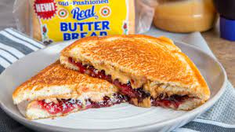

PB&J

Description
PB&J (Peanut butte and jelly) is a classic comfort sandwhich that can be made in less than 5 minutes and fill you with joy!
Ingredients
- 2 slices bread
- 2 tablespoons peanut butter
- 2 teaspoons jam or jelly of choice
Steps
-
Spread peanut butter on one slice of bread.
-
Spread jelly or jam on the other slice of bread.
-
Combine slices to make a sandwich and enjoy!